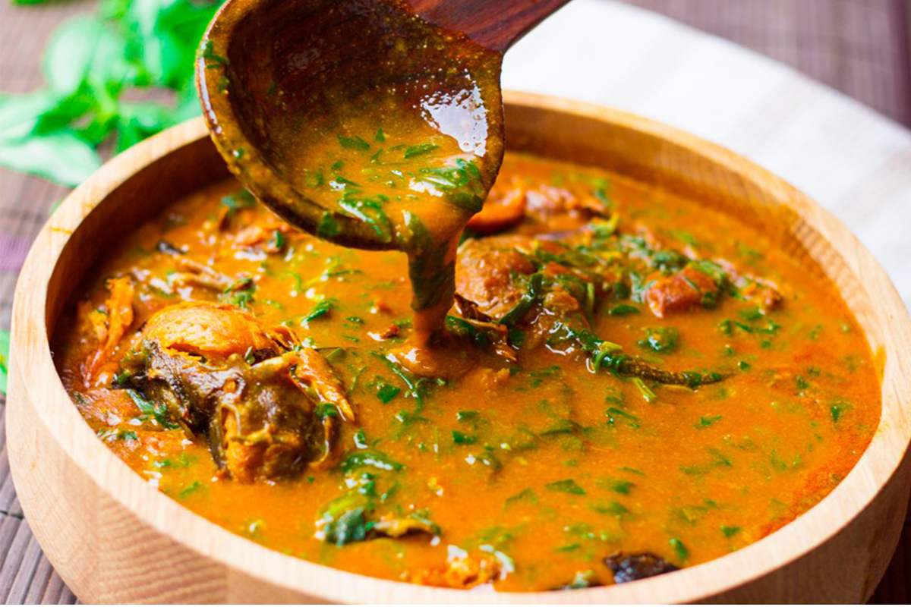

Ogbono Soup

Description
Ogbono Soup or Draw Soup, is a popular Nigerian soup recipe made with Ogbono Seeds(wild African bush mango seeds).
Ingredients
- Assorted meats (Ponmo, Shaki, Bokoto, Beef, Goat meat and Offals (internal organs) are ideal)
- 1 cup of ogbono seed
- Vegetable leaves
- Basil Leave (optional)
- 3 table spoons of ground crayfish
- 1/2 cup of smoked/raw king prawns (optional)
- Smoked catfish
- Dried stockfish
- 1 or 2 sliced scotch bonnet (Ata rodo)
- 1 red onion chopped
- 1 tablespoon of caayenne pepper (Atagungun)
- Bouillon cubes
- 2 tablespoons of locust besn (Iru)
- Salt to taste
Steps
Get your core ingredients ready…
- Grind your Ogbono seeds finely and set aside
- Pick and wash the Ugu leaves with hot water to rid if of dirt. Be careful not to soak it in hot water for too long…
- If you’re using dry Basil leaves/Efinrin, soak in hot water for 5 minutes to soften and remove all traces of dirt…
- Wash all the meats you’ll be using thoroughly to rid them of blood and dirt. I’ll be using Shaki (tripe), Ponmo, Goat meat, Bokoto (cow leg) and Fuku (cow lungs)…
Then, set a big pot on a hob on low heat, add in the tougher meats, in this case, the Shaki, Cow leg and Ponmo, add the sliced onions and salt to taste. Cover and let it simmer on low heat for 20 minutes. This helps to release the meats’ natural juices.
- Most internal organs are very bloody and it’s a struggle getting all the blood out, what I do is clean and wash as much as I can, then add water and boil till slightly tender. When it’s half cooked, I decant all the water, wash again, then add more water and salt to taste, then continue cooking till doneness.
-
- Now, add the cooked offals (if you’re using any) and smoked catfish when the meats are cooked..
- After 5-6 minutes, take out the stockfish and shred to smaller pieces, now add the chopped pepper…
- Now add the ground pepper, Iru, ground crayfish, both the raw and smoked king prawns…
- Now add the palm oil, cook for another 3-5 minutes to allow the palm oil melt further and be well combined with the meats…
- Then, add the Ogbono gradually, stir till fully dissolved ( the Soup should begin to draw at this time)
- Combine thoroughly and leave to cook for at least 15 minutes, stir occasionally….
- Now add the washed Ugu leaves, turn the heat to low at this time….
- Now add the Basil leaves/ Efinrin, let it cook for 3-5 minutes, then switch off the heat and let the soup simmer with the residual heat..
- Add more stock/water if you find the consistency too thick (I added a cup of water, 250ml)and let it continue to simmer…
- And that’s it, your Ogbono soup is ready. Serve with any swallow of your choice..
Back to recipe